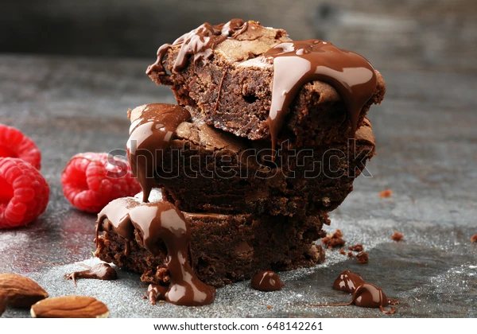

- Carta
- Sobre nosotros
- Iniciar sesión
- Cesta
Categorías
- No horneados
- Tradicionales
- Desayunos dulces
- Cremosos
- Al horno
- Cereales
Arroz con leche

Arroz con leche peruano, cremoso y suave, con un toque especiado de canela que realza su dulzura, ideal para cualquier momento.
Categoría: Tradicionales
Valoración: ⭐⭐⭐⭐
Tortitas con frutos rojos

Tortitas doradas y esponjosas, acompañadas de frutas frescas y miel, un desayuno irresistible lleno de dulzura y suavidad.
Categoría: Desayunos dulces
Valoración: ⭐⭐⭐⭐⭐
Flan de caramelo

Flan de caramelo clásico, con textura delicada y una capa brillante que resbala suavemente, conquistando con su sencillez.
Categoría: Cremosos
Valoración: ⭐⭐⭐⭐⭐
Brownie de chocolate
Tocino de cielo ligero y jugoso, bañado en almíbar que intensifica su dulzura, combinando simplicidad y exquisitez.
Categoría: Al horno
Valoración: ⭐⭐⭐⭐
Mochi

Mochis japoneses coloridos y tiernos, con relleno dulce que se deshace en la boca, ¡perfectos en cada bocado!
Categoría: No horneados
Valoración: ⭐⭐⭐⭐⭐
Tarta de queso con caramelo

Tarta de queso cremosa, con una fina capa de caramelo que realza su sabor, un postre que enamora a cada mordisco.
Categoría: Cremosos
Valoración: ⭐⭐⭐⭐⭐
Tocino de cielo

Tocino de cielo suave y brillante, bañado en almíbar dorado que intensifica su dulzura. Un postre exquisito en cada bocado.
Categoría: Tradicionales
Valoración: ⭐⭐⭐⭐
Flan napolitano

Flan napolitano suave y cubierto de caramelo brillante, con un toque de cereza y menta que lo hacen elegante y delicioso.
Categoría: Cremosos
Valoración: ⭐⭐⭐⭐⭐
Reeses

Reese's Puffs, cereal crujiente de maní y chocolate, perfecto para un desayuno energético o un antojo dulce.
Categoría: Cereales
Valoración: ⭐⭐⭐